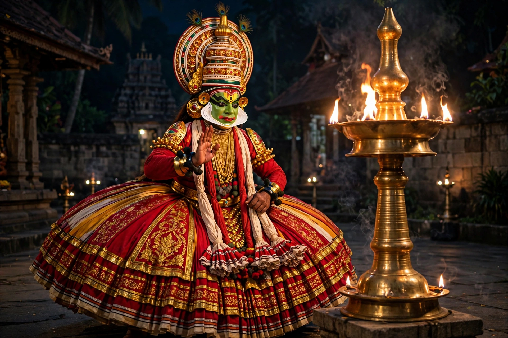

From Wikipedia, the free encyclopedia

| Origin | Kerala, India, 17th century |
|---|---|
| Form | Dance-drama ("story play") |
| Source texts | Mahabharata, Ramayana, Puranas |
| Music | Sopana sangeetham; chenda and maddalam drums |
| Key training | Related to Kalaripayattu |
Kathakali (Malayalam: കഥകളി, "story-play") is a major form of Indian classical dance-drama that originated in the south-western state of Kerala in the 17th century. It is distinguished by its elaborately colourful make-up and costumes, huge skirts and headdresses, and a codified language of hand gestures (mudras) and facial expressions through which actor-dancers enact stories from the Hindu epics and Puranas, while vocalists sing the text.
Kathakali crystallised from earlier Kerala forms — the temple art Krishnanattam commissioned by the Zamorin of Calicut, Ramanattam created by the Raja of Kottarakkara, and the Sanskrit theatre tradition of Kutiyattam. Its physical training draws on the martial art Kalaripayattu: performers undergo years of rigorous conditioning, including massage, to achieve the form's wide stance, leaps and precise eye movements. In the 20th century the poet Vallathol Narayana Menon founded the Kerala Kalamandalam (1930), rescuing the art from decline and systematising its training.
Traditional performances begin at dusk and last all night; modern presentations are usually excerpted to a few hours. Make-up types signal character: green-faced pachavesha for noble heroes such as Arjuna and Rama, knife-bearded (kathivesha) for villainous kings, red-bearded for demons, black for hunters and forest dwellers, and shining yellow (minukku) for women and sages, traditionally played by male actors. Singers stand at the rear with cymbals and gong, while drummers on the chenda and maddalam drive the dramatic climaxes. A large brass lamp (kalivilakku) at the front of the stage provides the traditional light. Famous exponents have included Kalamandalam Krishnan Nair and Kalamandalam Ramankutty Nair.
See also: Kalaripayattu · Kerala · Mahabharata